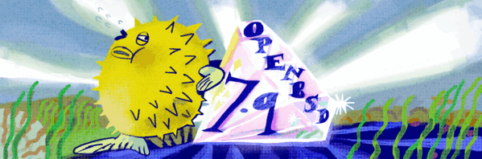

OpenBSD 7.9 disponível — sysupgrade
A comunidade OpenBSD no Brasil
Segurança, simplicidade e código livre desde 1995. Junte-se ao grupo brasileiro de usuários do sistema operacional mais seguro do planeta.
1995primeira release
7.9versão estável atual
2falhas remotas na instalação padrão
6 em 6meses entre releases
O projeto
Livre, multiplataforma e obcecado por segurança
O OpenBSD é um sistema operacional gratuito e de código aberto baseado no BSD Unix da Universidade de Berkeley. Nasceu em 1995 como um fork do NetBSD e desde então prioriza correção de código, criptografia integrada e documentação exemplar.
Segurança proativa
Auditoria contínua de código, mitigações pioneiras como pledge e unveil, e criptografia habilitada por padrão.
Simplicidade
Um sistema coeso e enxuto, sem camadas desnecessárias. A instalação padrão é funcional e segura em minutos.
Portabilidade
Roda em dezenas de plataformas de hardware, do servidor parrudo ao laptop antigo esquecido na gaveta.
Documentação
Man pages consideradas as melhores do mundo Unix. Se está no sistema, está documentado — e correto.
Puffy
O baiacu mais famoso do software livre. Pequeno, espinhoso e pronto para defender seu servidor.
Download
Obtenha o OpenBSD
Baixe através de um servidor espelho no Brasil ou pelo CDN oficial.
Comunidade
Participe
Bate-papo, código e colaboração — do jeito brasileiro.
IRC
Venha bater um papo conosco no canal #openbsd-br na Libera.chat.
GitHub
Colabore com este site ou com algum projeto OpenBSD. Pull requests são bem-vindos.
Lista de discussão
Uma lista de e-mail para atender a comunidade brasileira de usuários.
Servidores espelho
Deseja hospedar um mirror no Brasil? Entre em contato pelo GitHub.
Artwork
Mascotes e logos das releases do OpenBSD, organizados por versão.
Site oficial
Documentação, FAQ, errata e tudo mais sobre o projeto em openbsd.org.